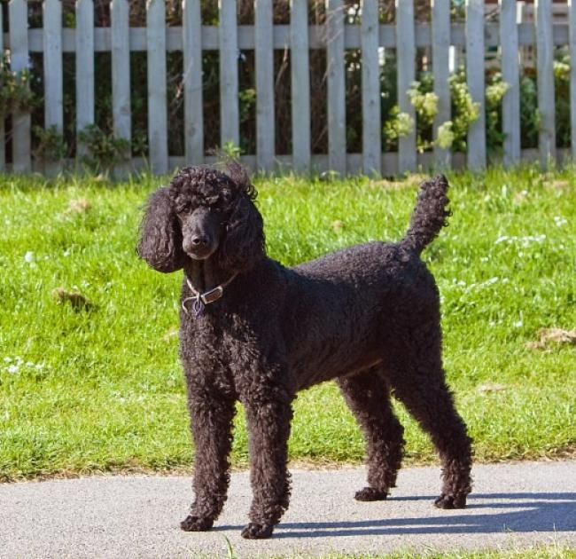

Poedel
Een Franse poedel of kortweg (dwerg)poedel is een hondenras dat afstamt van de barbet. Doordat de Fransen veel werk aan de rasveredeling van de poedel hebben verricht wordt het ras tegenwoordig als Frans beschouwd. Of de poedel ook echt oorspronkelijk een Frans ras is is omstreden. Met zekerheid bekend is slechts dat de poedel al vanaf het begin van de zestiende eeuw in Midden- en Zuid-Europa voorkomt.
De bewegingsvrijheid van de poedel was vroeger erg belangrijk omdat het een jachthond was. Daarom werden de haren van de hond op de meeste plaatsen grotendeels verwijderd maar op sommige andere plaatsen niet. Deze plekken waren die bij de gewrichten en de borstkas; de reden daarvan was omdat het te gevoelig voor de hond was om daar de haren weg te halen. Ook op de staart en bij de kop liet men het haar staan om bij het werk in het water de honden beter te kunnen zien.
De poedel is een van de rassen die het snelst zijn ontwikkeld en van uiterlijk zijn veranderd.
Poedels zijn er in diverse variëteiten:
- De koningspoedel; deze heeft een schofthoogte van 45 tot 60 cm. De officiële naam van de koningspoedel is grote poedel. De naam koningspoedel verwijst naar een grote witte poedel in koordenmodel. De koorden zouden dan als een koningsmantel of een nertsmantel over de grond slepen, vandaar de naam koningspoedel. Ook wordt in Nederland de naam standaardpoedel gebruikt voor de grootste variëteit van de poedel (Engels: standard poodle).
- De middenslagpoedel; deze heeft een schofthoogte van 35 tot 45 cm.
- De dwergpoedel; deze heeft een schofthoogte van 28 tot 35 cm;
- De dwergpoedel; deze heeft een schofthoogte van 28 tot 35 cm;
bron: wikipedia.nl